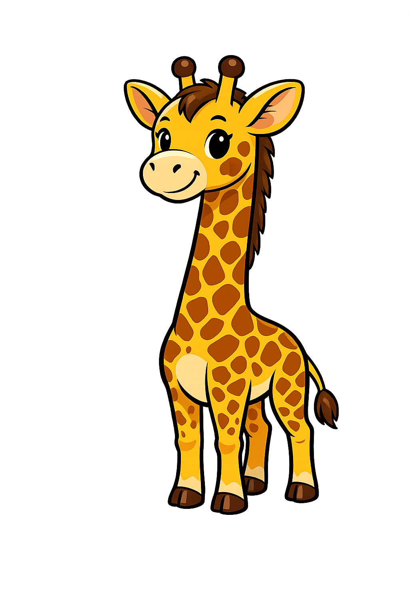

Analise empirica do custo de tempo e espaço dos algoritmos de ordenação
Como funciona
Constrói a lista ordenada um elemento por vez

Passo a passo
- 1 Começa com o segundo elemento
- 2 Compara com elementos anteriores
- 3 Desloca elementos maiores
- 4 Insere na posição correta
- 5 Repete até o final